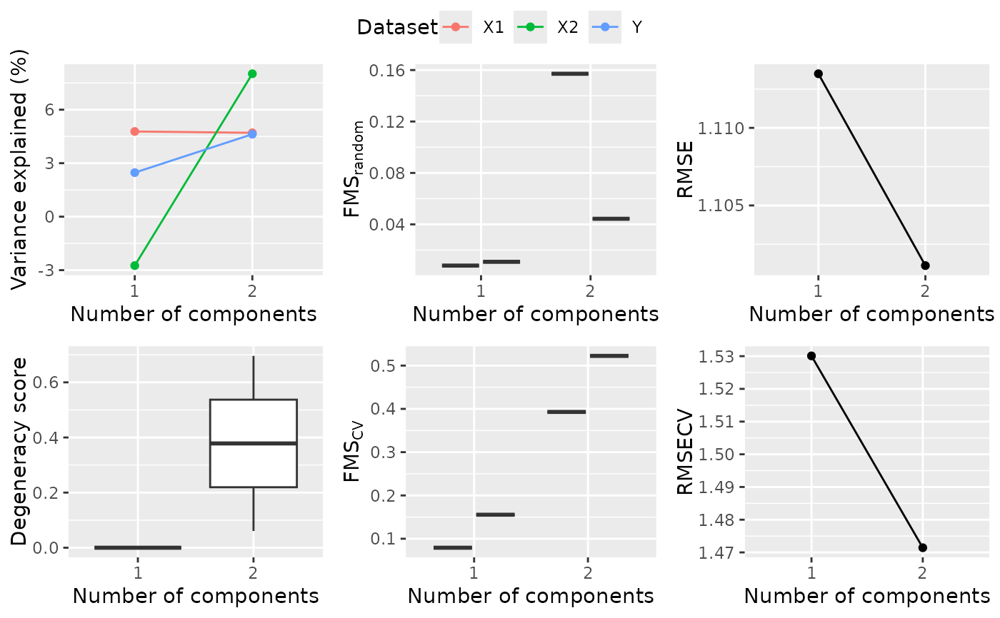

Model selection for ACMTFR
Usage
ACMTFR_modelSelection(
datasets,
modes,
Y,
sharedMode = 1,
maxNumComponents = 5,
alpha = 1,
beta = rep(0.001, length(Z$object)),
epsilon = 1e-08,
pi = 0.5,
normalize = TRUE,
normY = 1,
method = "CG",
cg_update = "HS",
line_search = "MT",
max_iter = 10000,
max_fn = 10000,
abs_tol = 1e-10,
rel_tol = 1e-10,
grad_tol = 1e-10,
nstart = 5,
numCores = 1,
cvFolds = 2
)Arguments
- datasets
List of arrays of datasets. Multi-way and two-way may be combined.
- modes
Numbered modes per dataset in a list. Example element 1: 1 2 3 and element 2: 1 4 for the X tensor and Y matrix case with a shared subject mode.
- Y
Dependent variable (regression part).
Mode that is shared between all blocks, used to remove fibers for numFolds randomly initialized models.
- maxNumComponents
Maximum number of components to check (default 3).
- alpha
Scalar penalizing the components to be norm 1 (default 1).
- beta
Vector of penalty values for each dataset, penalizing the lambda terms (default 1e-3).
- epsilon
Scalar value to make it possible to compute the partial derivatives of lambda (default 1e-8).
- pi
Pi value of the loss function as specified by Van der Ploeg et al., 2025.
- normalize
Normalize the X blocks to frobenius norm 1 (default TRUE).
- normY
Normalize Y to a specific value, (default: 1).
- method
Optimization method to use (default = "CG", the conjugate gradient). See
mize::mize()for other options.- cg_update
Update method for the conjugate gradient algorithm, see
mize::mize()for the options (default="HS", Hestenes-Steifel).- line_search
Line search algorithm to use, see
mize::mize()for the options (default="MT", More-Thuente).- max_iter
Maximum number of iterations.
- max_fn
Maximum number of function evaluations.
- abs_tol
Function tolerance criterion for convergence.
- rel_tol
Relative function tolerance criterion for convergence.
- grad_tol
Absolute tolerence for the l2-norm of the gradient vector.
- nstart
Number of models to produce (default 1). If set higher than one, the package will return the best fitted model.
- numCores
Number of cores to use (default 1). If set higher than one, the package will attempt to run in parallel.
- cvFolds
Number of CV folds to create (default 10).
Value
List object containing plots of all metrics and dataframes containing the data used to create them.
Examples
set.seed(123)
I = 10
J = 5
K = 3
df = array(rnorm(I*J*K), c(I,J,K))
df2 = array(rnorm(I*J*K), c(I,J,K))
datasets = list(df, df2)
modes = list(c(1,2,3), c(1,4,5))
Y = as.matrix(rnorm(I))
# A very small procedure is run to limit computational requirements
result = ACMTFR_modelSelection(datasets,
modes,
Y,
pi=1.0,
maxNumComponents=2,
nstart=2,
cvFolds=2,
rel_tol=0.5,
abs_tol=0.5)
result$plots$overview
